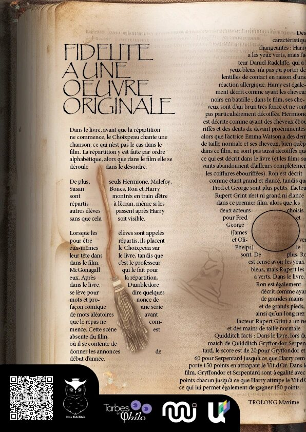
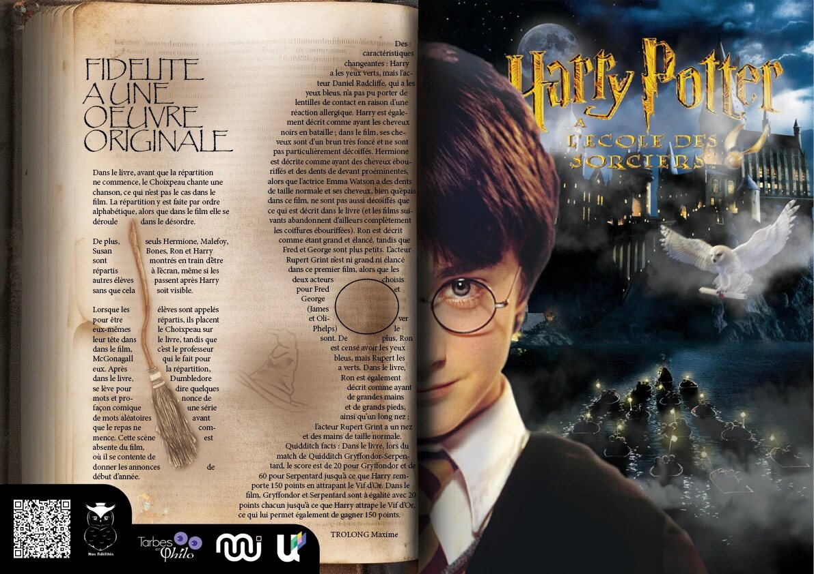

Fidélité à une œuvre
Une double page de magazine qui compare le livre et le film Harry Potter : le texte prend la forme d'un vieux grimoire, l'affiche du film occupe l'autre page.

- Année
- TODO
- Cadre
- Projet de BUT MMI avec Tarbes en Philo (TODO : à vérifier)
- Catégorie
- Affiches
- Outils
- InDesign, Photoshop

Contexte
TODO : le thème du numéro (les fidélités) et la consigne.
Mon rôle
J'ai écrit le texte et fait la mise en page. TODO : à vérifier.